Publications
Selected Publications
For the complete and most up-to-date list, please see Google Scholar. * denotes equal contribution.
2026
-
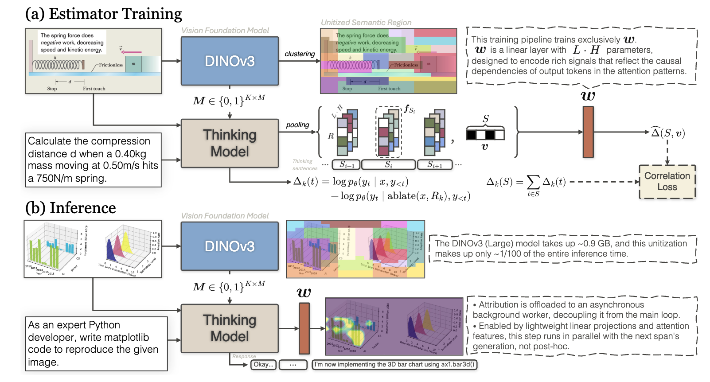
Fig.Real-Time Visual Attribution Streaming in Thinking Model Spotlight -
 Fig.
ZOO-Prune: Training-Free Token Pruning via Zeroth-Order Gradient Estimation in Vision-Language Models
Fig.
ZOO-Prune: Training-Free Token Pruning via Zeroth-Order Gradient Estimation in Vision-Language Models -
 Fig.
VisRef: Visual Refocusing while Thinking Improves Test-Time Scaling in Multi-Modal Large Reasoning Models
Fig.
VisRef: Visual Refocusing while Thinking Improves Test-Time Scaling in Multi-Modal Large Reasoning Models
2025
-
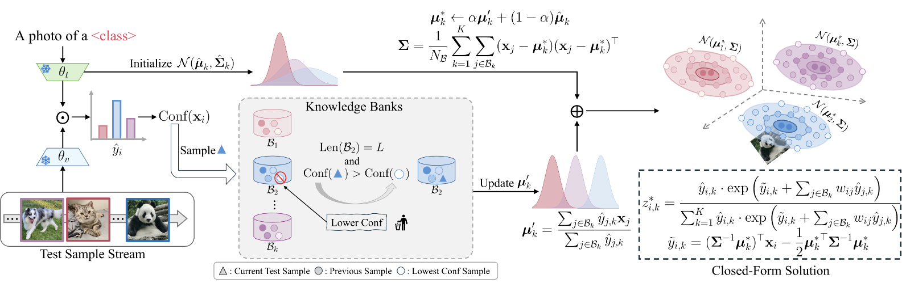
Fig.Backpropagation-Free Test-Time Adaptation via Probabilistic Gaussian Alignment -
 Fig.
Task Vector Quantization for Memory-Efficient Model Merging
Fig.
Task Vector Quantization for Memory-Efficient Model Merging -
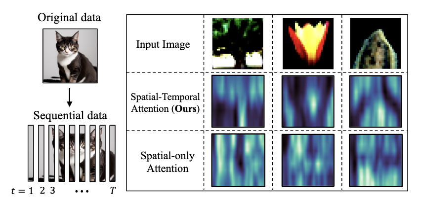
Fig.Spiking Transformer with Spatial-Temporal Attention
2024
-
 Fig.
GenQ: Quantization in Low Data Regimes with Generative Synthetic Data
Fig.
GenQ: Quantization in Low Data Regimes with Generative Synthetic Data -
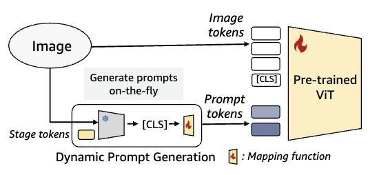
Fig.Open-World Dynamic Prompt and Continual Visual Representation Learning -
 Fig.
One-stage Prompt-based Continual Learning
Fig.
One-stage Prompt-based Continual Learning -
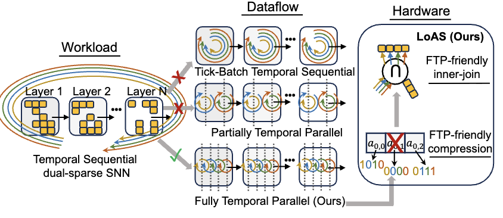
Fig.LoAS: Fully Temporal-Parallel Dataflow for Dual-Sparse Spiking Neural Networks -
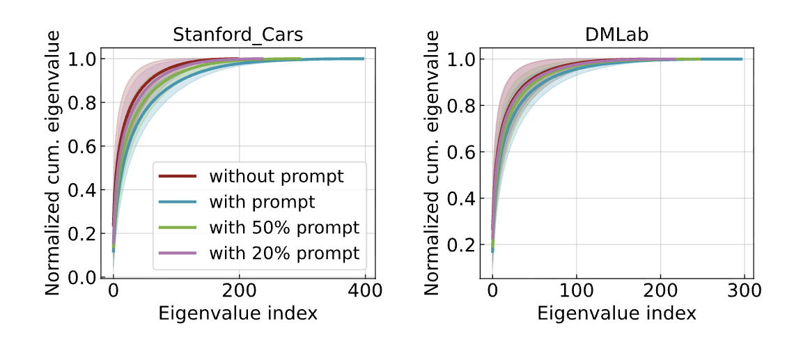
Fig.Do We Really Need a Large Number of Visual Prompts? -
Fig.
When In-Memory Computing Meets Spiking Neural Networks — A Perspective on Device–Circuit–System-and-Algorithm Co-Design
2023
-
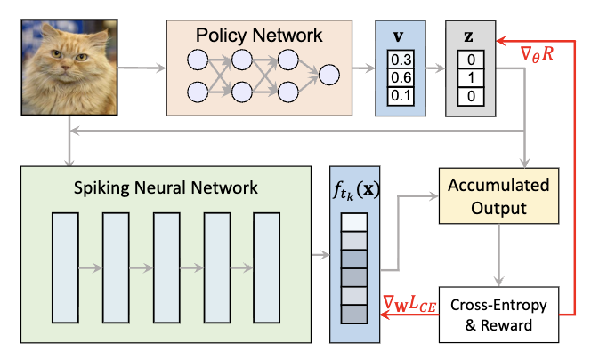
Fig.SEENN: Towards Temporal Spiking Early-Exit Neural Networks -
 Fig.
Exploring Temporal Information Dynamics in Spiking Neural Networks
Fig.
Exploring Temporal Information Dynamics in Spiking Neural Networks
2022
-
 Fig.
Exploring Lottery Ticket Hypothesis in Spiking Neural Networks Oral
Fig.
Exploring Lottery Ticket Hypothesis in Spiking Neural Networks Oral -
 Fig.
Neural Architecture Search for Spiking Neural Networks
Fig.
Neural Architecture Search for Spiking Neural Networks -
 Fig.
Neuromorphic Data Augmentation for Training Spiking Neural Networks
Fig.
Neuromorphic Data Augmentation for Training Spiking Neural Networks -
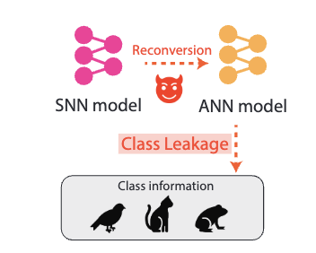
Fig.PrivateSNN: Privacy-Preserving Spiking Neural Networks -
 Fig.
Rate Coding or Direct Coding: Which One is Better for Accurate, Robust, and Energy-Efficient Spiking Neural Networks?
Fig.
Rate Coding or Direct Coding: Which One is Better for Accurate, Robust, and Energy-Efficient Spiking Neural Networks?
2021
-
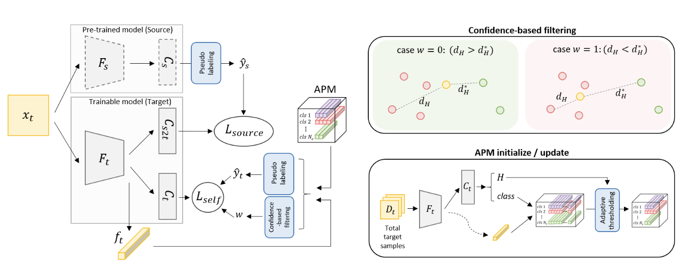
Fig.Domain Adaptation without Source Data -
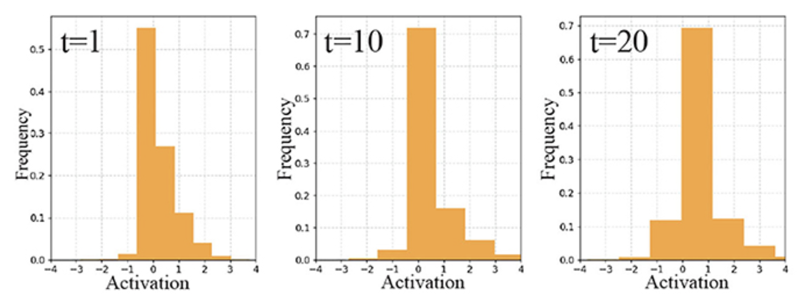
Fig.Revisiting Batch Normalization for Training Low-Latency Deep Spiking Neural Networks from Scratch
2020
-
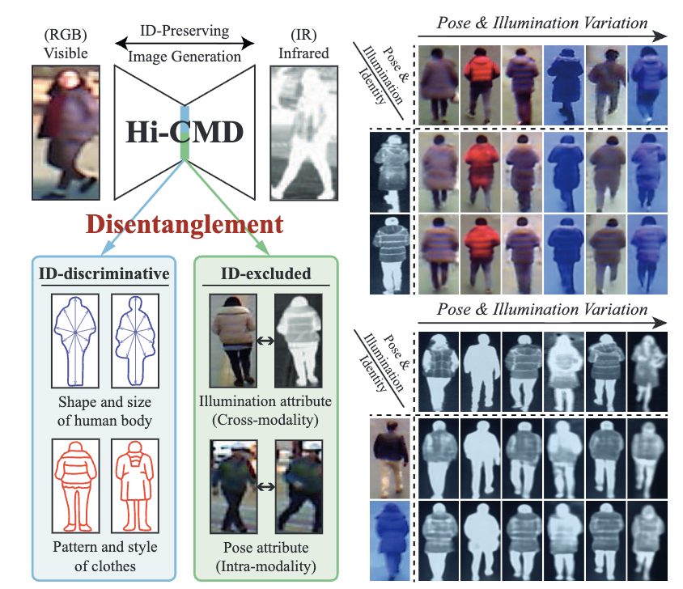
Fig.Hi-CMD: Hierarchical Cross-Modality Disentanglement for Visible-Infrared Person Re-Identification